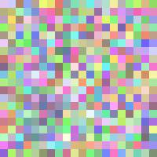

Zooming
Fashion
Scan a garment to unlock its story, craftsmanship and fit.
Drag & drop or browse
JPEG · PNG · WEBP
Scan a garment to unlock its story, craftsmanship and fit.
Drag & drop or browse
JPEG · PNG · WEBP
Hover over the garment to reveal every thread and stitch.

This archival garment pays homage to the elegance of Italian haute couture. Created in the mid-20th century, it reflects a period of creativity when designers blended traditional craftsmanship with innovative cuts. The intricate broccato motifs and rich silk embody a narrative of artistry, culture and history.
Renato Balestra was an iconic Italian fashion designer celebrated for his exquisite embroidery and visionary silhouettes. His work helped define the Italian couture scene in the 1950s and 1960s, inspiring generations of designers worldwide.
Upload your photo to see how this garment looks on you.